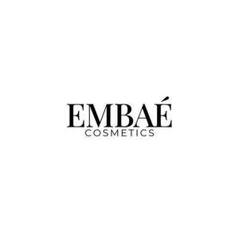

Trade Mark Journal No.2025/020 16 May 2025
UK00004191508 19 April 2025 (3,18,21)

- Class 3
- Makeup; Make-up; Facial makeup; Lip makeup; Nail makeup; Eye makeup; Theatrical makeup; Natural makeup; Make-up remover; Skin make-up; Make-up primer; Organic makeup; Make-up removers; Make-up primers; Eye makeup remover; Make-up powder; Powder (Make-up -); Powder for make-up; Multifunctional makeup; Foundation make-up; Make-up foundation; Make-up pencils; Make-up for the face; Make-up for compacts; Eye make-up; Make-up foundations; Make-up palettes containing cosmetics; Make-up removing lotions; Chalk for make-up; Eye make-up removers; Eyes make-up; Make-up kits; Make-up base; Make-up preparations; Make-up removing creams; Eyelid doubling makeup; Makeup setting sprays; Make-up removing gels; Hair cosmetics; Make-up for the face and body; Facial concealer; Hair mascara; Skincare cosmetics; Make-up preparations for the face and body; Make-up removing preparations; Hairstyling serums; Facial creams [cosmetics]; Facial gels [cosmetics]; Hairstyling masks; Make-up removing milk; Make-up removing milks; Skin masks [cosmetics]; Eyeliner; Cosmetics for the use on the hair; Cosmetics; Body and facial creams [cosmetics]; Skin moisturizers used as cosmetics; Lip cosmetics; Compacts containing make-up; Cosmetic hair lotions; Body and facial gels [cosmetics]; Eye-shadow; Mascara; Fake blood being theatrical make-up; Eyeshadow; Cosmetics for eye-lashes; Lip stains [cosmetics]; Nail primer [cosmetics]; Eyebrow cosmetics; Moisturisers [cosmetics]; Facial moisturisers [cosmetic]; Hair styling lotions; Facial cleansers [cosmetic]; Facial beauty masks; Facial lotions [cosmetic]; Cosmetic facial lotions; Nail cosmetics; Nail paint [cosmetics]; Lipstick; Colour cosmetics for the skin; Hair moisturizers; Cosmetic facial masks; Facial masks [cosmetic]; Cosmetic hair dressing preparations; Self-tanning preparations [cosmetics]; Eye cosmetics; Eyeshadow palettes; Hair care lotions [for cosmetic use]; Anti-aging moisturizers used as cosmetics; Body creams [cosmetics]; Nail polish removers [cosmetics]; Facial creams [cosmetic]; Facial creams [for cosmetic use]; Cosmetics for use on the skin; Hair care creams [for cosmetic use]; Colour cosmetics; Tanning gels [cosmetics]; Nail varnish remover [cosmetics]; Facial wipes impregnated with cosmetics; Beauty preparations for the hair; Skin fresheners [cosmetics]; Night creams [cosmetics]; Skin moisturizer masks; Beauty care cosmetics; Skin cleansers [cosmetic]; Skin recovery creams [cosmetics]; Beauty serums; Beauty creams; Beauty lotions; Beauty masks; Masks (Beauty -); Beauty soap; Beauty milk; Beauty gels; Beauty milks; Beauty creams for body care; Beauty balm creams; Beauty care preparations; Distilled oils for beauty care; Beauty tonics for application to the face; Beauty masks for hands; Beauty serums with anti-ageing properties; Beauty tonics for application to the body; Natural cosmetics; Body cleaning and beauty care preparations; Non-medicated beauty preparations; Natural perfumery; Body care cosmetics; Skin care cosmetics; Colour cosmetics for the eyes; Cosmetic products in the form of aerosols for skincare; Natural oils for cosmetic purposes; Organic cosmetics; Cosmetics for suntanning; Cosmetic products in the form of aerosols for skin care; Decorative cosmetics; Cosmetics and cosmetic preparations; Non-medicated cosmetics; Mousses [cosmetics]; Cosmetics preparations; Cosmetics in the form of lotions; Tanning oils [cosmetics]; Suncare lotions [for cosmetic use]; Cosmetics for animals; Tanning preparations [cosmetics]; Multifunctional cosmetics; Milks [cosmetics]; After-sun oils [cosmetics]; Tanning milks [cosmetics]; Cosmetics for eye-brows; Functional cosmetics; Suntan oils [cosmetics]; Fluid creams [cosmetics]; Suntan lotion [cosmetics]; Cosmetics for children; Non-medicated cosmetics and toiletry preparations; Cosmetics in the form of creams; Powder compacts [cosmetics]; Sun-tanning preparations [cosmetics]; After-sun milks [cosmetics]; Suntanning oil [cosmetics]; After-sun milk [cosmetics]; Cosmetic moisturisers; Sunscreens [for cosmetic use]; Cosmetic creams and lotions; Bath powder [cosmetics]; Sun blocking lipsticks [cosmetics]; Body gels [cosmetics]; Sunscreen [for cosmetic use]; Sunscreen creams [for cosmetic use]; Creams (Cosmetic -); Cosmetic creams; Cosmetic soaps; Cosmetics in the form of powders; Cosmetic skin fresheners; Dyes (Cosmetic -); Cosmetic dyes; After-sun lotions [for cosmetic use]; Cosmetics containing panthenol; Cosmetics in the form of oils; Cosmetic suntan lotions; Skin care lotions [cosmetic]; Sun protecting creams [cosmetics]; Anti-aging creams [for cosmetic use]; Cosmetic products for the shower; Anti-ageing creams [for cosmetic use]; Smoothing emulsions [cosmetics]; Perfumed powders [for cosmetic use]; Liners [cosmetics] for the eyes; Moisturising skin lotions [cosmetic]; Cosmetic creams for the skin; Skin creams [cosmetic]; Skin creams [for cosmetic use].
- Class 18
- Makeup bags; Make-up bags; Make-up boxes; Make-up cases; Beauty cases; Beauty cases [not fitted].
- Class 21
- Make-up brushes; Make-up sponges; Facial sponges for applying make-up; Eye make-up applicators; Makeup sponge holders; Make-up artist belts; Applicator sticks for applying makeup; Applicators for applying eye make-up; Cosmetics brushes; Make-up removing appliances; Eyeliner brushes; Applicator sticks for applying make-up; Mascara brushes; Cosmetic brushes; Hair for brushes; Hair brushes; Appliances for removing make-up, non-electric; Non-electric make-up removing appliances; Skin cleansing brushes; Applicators for cosmetics; Cosmetics applicators; Containers for cosmetics.
Elle Mccann